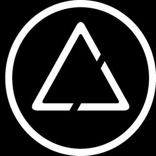

Asimov Jr.
Descrição
Minha jornada na Asimov começa bem antes do processo trainee, me interessei pela empresa por ter do meu curso, mas além disso por ter sido a empresa da Unifei com maior faturamento de primeiro ano. Após isso, veio a pandemia e me inscrevi assim mesmo no processo seletivo, fui aceito para área de projetos e ali comecei a gostar de desktop, mas acabei fazendo uma capacitação básica de mobile também. Em meus primeiros seis meses fui consultor de desktop, realizei um projeto (feito em JavaScript), após isso decidi tentar um cargo de liderança e participei do eleitoral para gerente de desktop, porém acabei ficando neste cargo por apenas um mês, não havia na empresa um Diretor de projetos e estavámos sentindo muito por isso.
Com isso, aceitei me tornar o diretor de projetos, encarar esse desafio maior do que havia planejado e tentar ajudar o máximo que fosse possível para a empresa que me deu muitas oportunidades. O ano de 2021 foi uma loucura, com metas altíssimas e muitas coisas a serem feitas, com a ajuda dos outros diretoes e também de todos os outros membros, conseguimos bater todas as metas e fechar o ano da melhor maneira possível, com um planejamento já para 2022 em andamento.
← Voltar ao portfólio